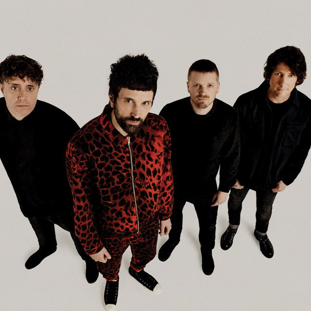

Music
Music is generally defined as the art of arranging sound to create some combination of form, harmony, melody, rhythm or otherwise expressive content.
newsSystem Of A Down
System of a Down (also known as SoaD or simply System) is an Armenian-American heavy metal band formed in Glendale, California, in 1994.

Kasabian
Kasabian are an English rock band formed in Leicester in 1997 by lead vocalist Tom Meighan, guitarist and occasional vocalist Sergio Pizzorno, guitarist Chris Karloff, and bassist Chris Edwards. Drummer Ian Matthews joined in 2004.
KARNA
"KARNA" is a Ukrainian rock band from Ivano-Frankivsk. Among the group's awards are the diploma of the finalists of the Chervona Ruta festival in 2001 and the grand prix of the Taras Bulba festival in 2003.